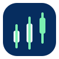

UZStock identity directions
Six SVG concepts for a trusted Uzbekistan market-data product. Concept 01 is the selected live mark: a U-shaped market curve turning into an upward arrow.
02 · Market orbit

Six SVG concepts for a trusted Uzbekistan market-data product. Concept 01 is the selected live mark: a U-shaped market curve turning into an upward arrow.
